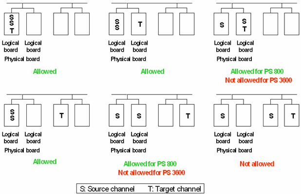
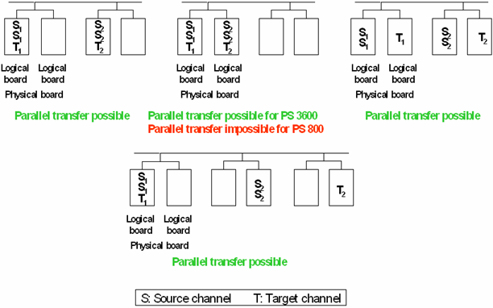

Hardware restrictions for result accumulation
Result accumulation in the hardware is only possible if the channels involved in the data transfer satisfy the following requirements:
- Source channels and target channel must be located within the same card cage.
- If one source channel resides on the same physical board as the target channel, then all source channels must reside on this board.
Pin Scale 3600 Digital Cards must also meet the following condition:
- No two source channels are allowed to reside on different logical boards of the same physical board.
The following figure gives some examples:

Besides these general restrictions, the following conditions must be fulfilled if several transfer actions are to be executed in parallel:
- At most one of these actions may involve more than one physical board.
- On the Pin Scale 3600 Digital Cards, no logical board must take part in more than one transfer action.
- On the Pin Scale 800 Digital Cards, no physical board must take part in more than one transfer action.
The following figure shows some scenarios for parallel transfer:
